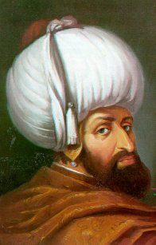

Yýldýrým Bayezid (1354-1403)

Osmanlý padiþahlarýnýn dördüncüsüdür. Atikliði, cesareti, karar alma ve uygulamadaki seriliðinden ötürü “Yýldýrým” lakabýyla anýlmýþ ve bu lakapla meþhur olmuþtur. Tarihe I. Bayezid ismiyle geçmiþtir. Babasý I. Murad’ýn savaþ meydanýnda þehit edilmesiyle tahta geçmiþ (1389) ve çok kýsa zamanda Osmanlý topraklarýný ve hakimiyetini geniþ alanlara yaymýþtýr. Ýlk defa Ýstanbul’u kuþatan Osmanlý padiþahýdýr. Timur ile yaptýðý savaþ, Ýstanbul’u fethetmesine mani olmuþtur. Anadolu birliðini saðlamýþ, ancak Ankara Savaþý’nda Timur’a yenilince bu birlik daðýlmýþ ve Osmanlý tarihinde “Fetret Devri” olarak anýlan dönem baþlamýþtýr. Risale-i Nur’da ismi zikredilirken, kendisinin de dahil olduðu büyük devlet ve hanedanýn Ýslam’a yaptýðý hizmetlere dikkat çekilmiþtir.Sultan I. Murad (Hüdavendigar) ve Gülçiçek Hatun’un oðlu olarak 1354 yýlýnda doðdu. Küçük yaþtan itibaren iyi bir eðitim gördü. Zamanýn önde gelen alimlerinden dini ve müspet ilimler derslerini aldý. Komutanlar tarafýndan da kendisine askeri eðitim verildi. 1381 yýlýnda Germiyanoðlu Süleyman Çelebi’nin kýzý Sultan Hatun ile evlendi. Devlet iþlerini yerinde ve uygulamalý bir þekilde öðrenmesi için, hanýmýnýn çeyizi olarak Osmanlýlara býrakýlan topraklara sancak beyi olarak tayin edildi. Bu vesile ile devletin doðu sýnýrlarýnýn muhafazasý da kendisine havale edilmiþ oldu.
Bayezid, 1386 yýlýnda babasýnýn komutanlýðýnda Karamanoðullarý üzerine yapýlan sefere katýldý. Frenk Yazýsý Savaþý’nda gösterdiði cesaret, atiklik ve yiðitliðinden ötürü kendisine “Yýldýrým” lakabý verildi ve bu lakapla anýlmaya baþlandý. 1389 yýlýnda yapýlan Birinci Kosova Savaþý’nda da büyük kahramanlýk gösterdi ve savaþýn kazanýlmasýnda önemli pay sahibi oldu. Babasýnýn savaþ meydanýnda þehit edilmesinden sonra devlet erkaný tarafýndan tahta çýkarýldý. Ýlerde doðabilecek iç savaþý önlemek maksadýyla tek kardeþi olan Yakup Beyi savaþ meydanýnda idam ettirdi.
Savaþ sonrasý Bursa’ya döndükten hemen sonra, Anadolu seferine çýktý. Savaþ sebebiyle devlete tabi topraklarda bazý karýþýklýklar baþ göstermiþti. Özellikle Karamanoðullarýnýn kýþkýrtmasýyla Osmanlýlarýn eline geçmiþ bulunan topraklar eski sahipleri tarafýndan yeniden zapt edilmeye baþlandý. Sultan, sefere çýkarak Aydýnoðullarý, Saruhanoðullarý, Germiyanoðullarý, Menteþe ve Hamid Beyliklerinin topraklarýný ülkesine kattý. Daha sonra Konya’yý da muhasara altýna aldý. Karamanoðullarý ile bir anlaþma yapýlarak Çarþamba suyu sýnýr olarak kabul edildi. Diðer küçük mahalli beyler de Sultanýn hakimiyetini tanýdýlar.
Bayezid, Anadolu seferinden sonra tekrar batýya yöneldi. Bizans üzerindeki kontrolünü giderek arttýrdý. Anadolu seferi sýrasýnda kendisine destek veren Johannes’in Bizans imparatoru olmasýný destekledi. Kendisi Anadolu’da iken batýda bulunan komutanlarý da Osmanlý hakimiyetini saðlamlaþtýrmaya yardýmcý oldular. Eflak Kralýnýn Anadolu seferini fýrsat bilip Osmanlý topraklarýna saldýrmasýndan dolayý Sultan hemen Rumeli’ye geçti. Eflak kralý üzerine gönderdiði komutanlarý bu þahsý yakalayarak Bursa’ya gönderdiler. Bu arada Bizanslýlar ve Macarlar arasýnda ittifak kurma çalýþmalarýnýn duyulmasý üzerine Ýstanbul 1391 yýlýnda Osmanlýlar tarafýndan ilk defa kuþatýldý.
Balkanlarda, Osmanlý devletine baðlýlýðý ve gücünü pekiþtirmek isteyen Bayezid, burada bulunan bütün prenslikleri davet ederek kendisine olan baðlýlýklarýný güçlendirmeye çalýþtý. Daha önce ele geçirilen ancak, sonradan elden çýkan Selanik’i tekrar ele geçirdi. 1394 yýlýndan itibaren Ýstanbul kuþatmasýný sýklaþtýrdý. Ayrýca, Macarlar üzerine de seferler düzenleyerek hem toprak elde etti hem de ordularýný bozguna uðrattý. 1395 yýlýnda kral Þiþman’ý yakalatarak öldürttü.
Batýdaki fetihler ve sultanýn ani hareketleri üzerine Macarlar Osmanlýlara karþý bir haçlý ittifaký kurmaya çalýþtýlar. Macar kralý Sigismund baþkanlýðýnda hazýrlanýp harekete geçen Haçlý ordusu Niðbolu önlerine gelerek þehri kuþattý. Padiþah Ýstanbul kuþatmasýný kaldýrýp hemen harekete geçti. 1396 yýlýnda yapýlan Niðbolu Savaþý’nda Haçlý ordusu aðýr bir yenilgiye uðratýldý. Bu savaþtan sonra Balkanlardaki Osmanlý hakimiyeti daha da güçlendiði gibi, Ýstanbul’un kontrolü de büyük ölçüde Sultanýn inisiyatifine geçti. Bizans imparatoru Ýstanbul’da bir Türk mahallesi kurulmasý, cami yapýlmasý ve bir kadý’nýn yerleþtirilmesini kabul etmek zorunda kaldý. Bu arada Anadolu hisarý da inþa ettirildi.
Ýstanbul kuþatmasý giderek þiddetlenirken þehrin düþmesi de an meselesi idi. Ýmparatorun yardým alma çabalarý da pek sonuç vermemekteydi. Ancak, doðudan gelen tehlike imparatorun iþine yarayacak ve Ýstanbul’un fethi yaklaþýk elli yýl sonraya kalacaktý. 1399 yýlýnda Doðu Anadolu’da bulunan Timur, Batý Anadolu topraklarýný da ele geçirmek istiyordu. Anadolu topraklarýný eline geçirip Büyük Selçuklu ve Ýlhanlýlarýn mirasýna konmak istiyordu. Ýran topraklarý da kendi hakimiyeti altýnda idi. Bayezid de beyliklerin topraklarýný ele geçirmek suretiyle Anadolu birliðini saðlamýþ bulunmaktaydý. Topraklarý Yýldýrým Bayezid tarafýndan ele geçirilen beyler Timur’a sýðýndýlar. Diðer taraftan Timur’un düþmaný olan Kara Yusuf ve Sultan Ahmed Celayir de Bayezid’in korumasý altýna girip kendisine sýðýnmýþlardý. Bu geliþmeler taraflar arasýndaki mücadelenin daha da kýzýþmasýna sebep oldu.
Anadolu topraklarýnda ilerlemeye baþlayan Timur, 1400 yýlýnda Sivas’ý kuþattý. Þehir kendisine teslim olduðu halde þehir yaðmalandý ve bir çok insan katledildi. Osmanlý devletine ait olan Sivas þehrinin iþgal edilmesi savaþý kaçýnýlmaz hale getirdi. Her iki ordu Ankara yakýnlarýndaki Çubuk Ovasý’nda karþý karþýya geldi (1402). Savaþýn baþlamasýndan sonra kendi beyleri Timur’un yanýnda yer alan kuvvetlerin taraf deðiþtirmesi ve Timur tarafýna geçmeleri savaþýn kaybedilmesinde önemli rol oynadý. Ankara Savaþý Osmanlý ordularýnýn yenilgisiyle sonuçlandý.
Ankara Savaþý’ný kaybeden Bayezid, Timur’a esir düþtü. Daha önce ortadan kaldýrýlmýþ bulunan beylikler yeniden kuruldu ve bunlar Timur’un hakimiyetini tanýdýlar. Maðlubiyeti hazmedemeyen Yýldýrým bir süre sonra Akþehir’de vefat etti (1403). Vefatýndan sonra “Fetret Devri” denilen ve uzun süre devam eden çocuklarý arasýndaki taht mücadeleleri baþladý. Yýldýrým Bayezid, Balkanlarda ve Anadolu’da tabi hanedanlarý ve beylikleri ortadan kaldýrmak suretiyle merkezi bir Ýslam devleti kurmak istemiþ ve bunda da önemli ölçüde baþarýlý olmuþtu.
Bayezid cesareti, atýlganlýðý, çevikliði ve olaylarýn seyrini hýzlý bir þekilde kavrayýþýyla tanýndý. Ýyi bir kumandan ve sultan olarak kabul gördü. En zor ve tehlikeli durumlarda soðukkanlýlýðýný yitirmemesi kýsa zamanda kendisine çok büyük baþarýlar kazandýrdý. Ömrü cepheden cepheye koþmakla geçti. Merkezi idareyi kurarak askerlik sistemini düzenledi. Yeni örfi hukuk uyguladý ve yeni kanunnameler çýkardý. Kendi döneminde Fýrat’tan Tuna’ya kadar uzanan Osmanlý topraklarýnda devlet idaresi baþarýlý bir þekilde uygulandý. Osmanlý Devleti Asya ve Avrupa’da siyasi faaliyetlerin belirleyici ve odak noktasý konumuna yükseldi.
Ömrü savaþ meydanlarýnda geçmesine raðmen vefatýndan sonra birçok hayýr kurumu býraktý. Birçok medrese, zaviye, hastane, imaret ve han yaptýrdý. Bursa’da bulunan meþhur Ulu Camiyi kendisi inþa ettirdi. Ýstanbul’u baský altýnda tutmak ve muhasarayý kolaylaþtýrmak maksadýyla, Güzelcehisar da denilen Anadoluhisarý’ný yaptýrdý. Kadýlarýn verdiði kararlara karýþmadýðý gibi, alimlerin sohbetlerine de büyük önem verdi. Din büyüklerine büyük hürmet gösterdi.
Risale-i Nur’da, ismi diðer bazý Osmanlý sultanlarý ile birlikte zikredilen Yýldýrým Bayezid’in mensubu bulunduðu hanedan ve devletin büyük hizmetlerine atýfta bulunulmaktadýr; “…Ýstanbul'u fetihle dünya hayatýnda yeni bir devir açan, þarka garba Kur'ân'ýn bayraktarlýðý vazifesiyle nur-u hidayet, ilim ve fazilet saçan, Avrupa'ya hakikî medeniyeti ders veren ve Ýslâmî medeniyetin ziyasýyla beþeriyeti aydýnlatan ve kos koca bir tarih, onlarýn kahramanlýðýyla dolu olan Yýldýrým'lar, Fatih'ler, Selim'ler ve Süleyman'lar ve onlarýn mensup olduðu bir millet…” (Emirdað Lahikasý, 1997, s. 363), ifadelerine yer verilirken, manevi deðerlerimize karþý yapýlan saldýrýlara da ayrýca dikkat çekilmekte, milleti geçmiþinden ve tarihinden koparmak isteyenlerin giriþimleri yüzlerine vurulmaktadýr.